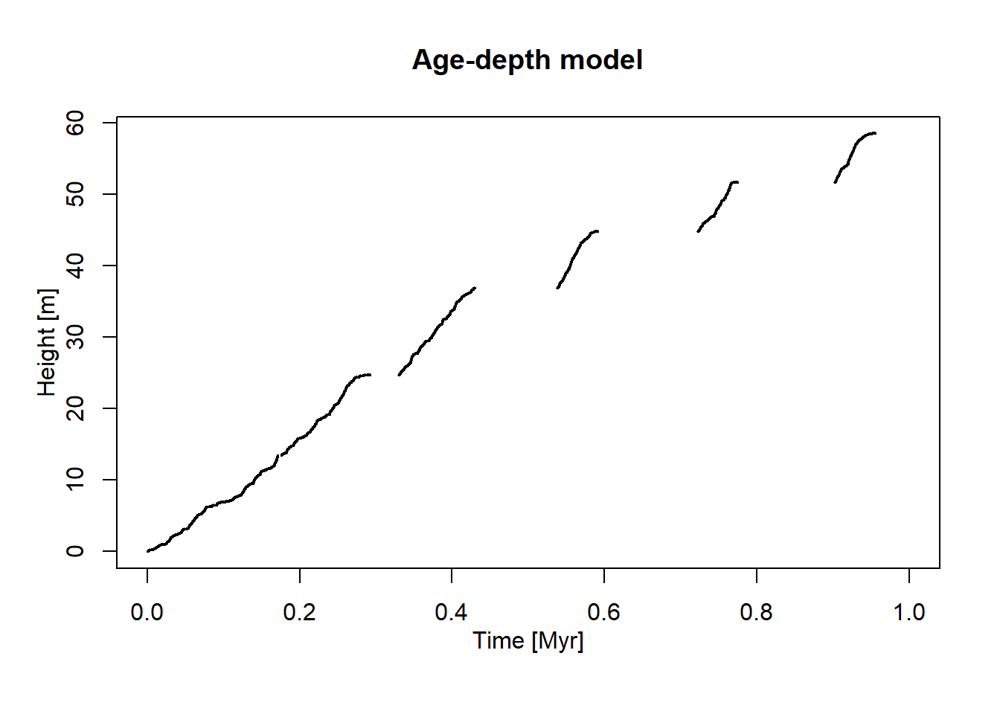
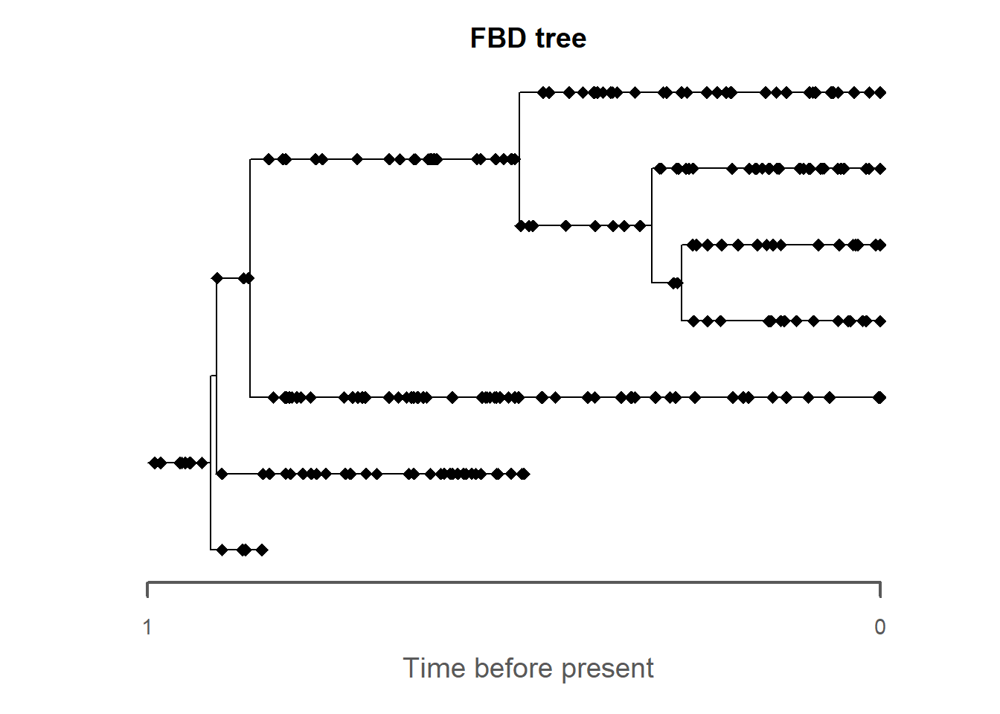
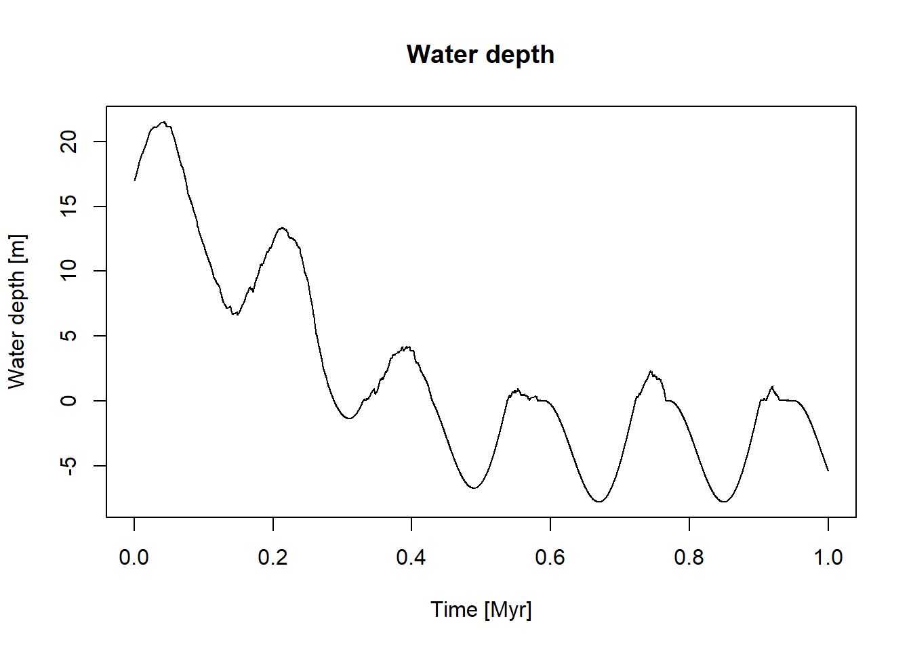
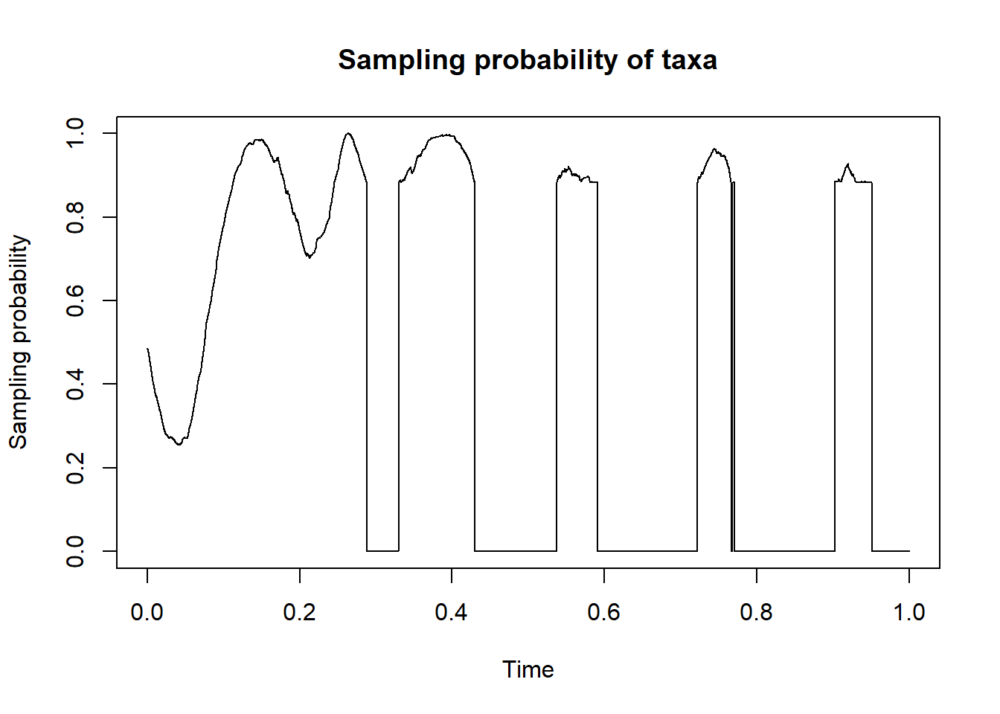
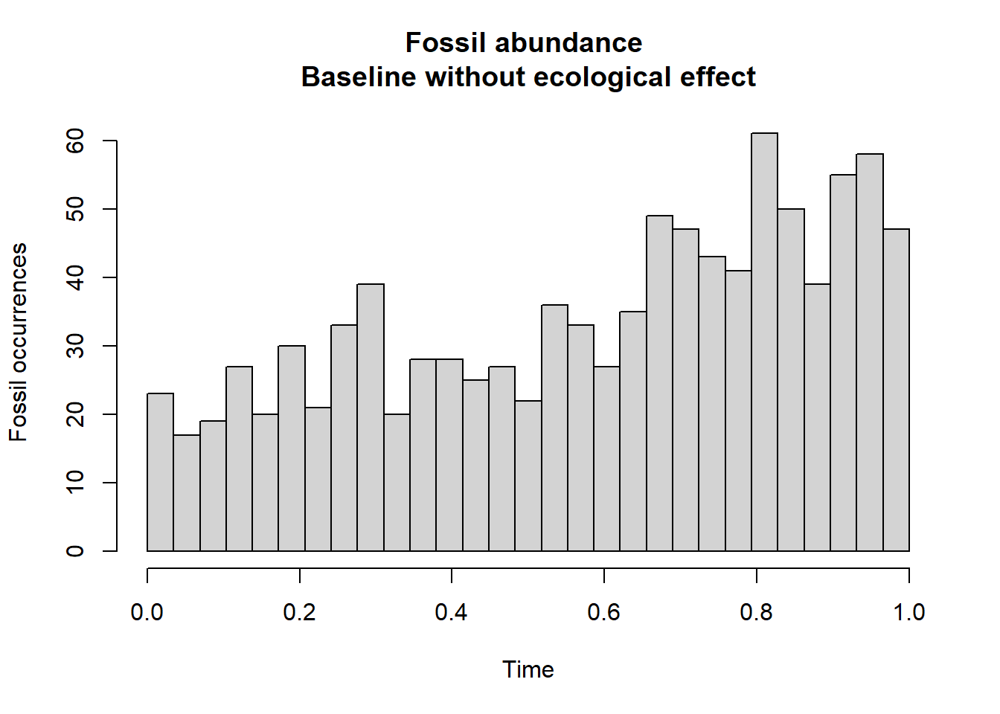
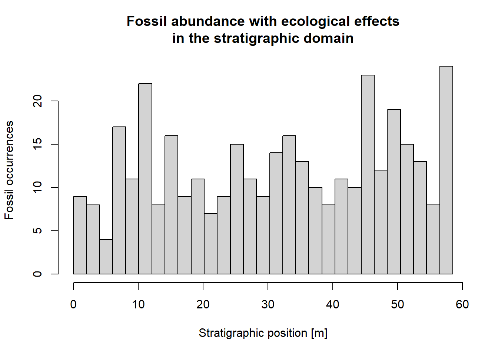
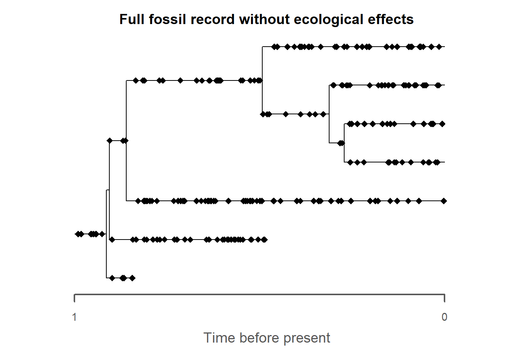
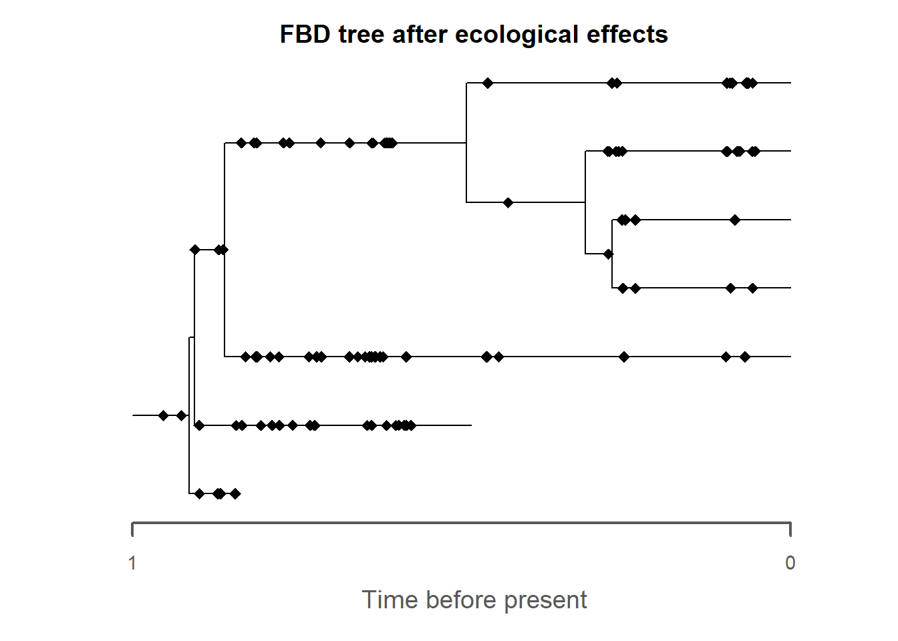
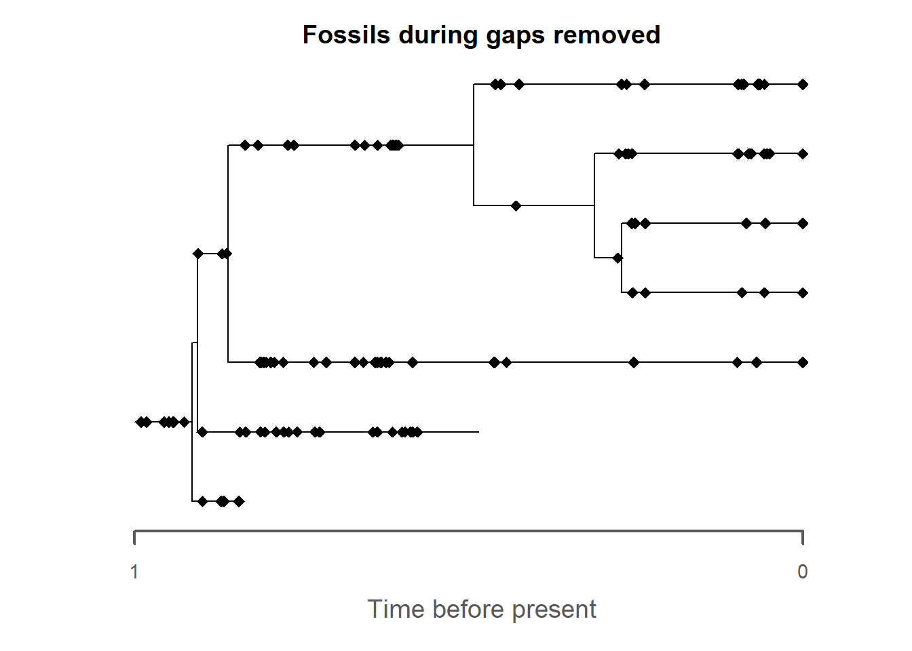
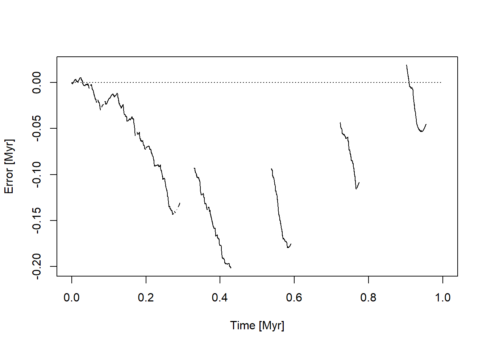

10Stratigraphic paleobiology and fossil occurrences
10.1 Introduction
In this chapter we will explore some advanced topics in stratigraphic paleobiology, specifically
How taphonomic and ecological effects shape the stratigraphic distribution of fossils
How the misidentification of age-depth relationships changes the inference of temporal dynamics.
To slowly approach this, we use two data types: event data as introduced on the first day (e.g., fossil ages/locations and last occurrences) and the fossil objects simulated by FossilSim that are associated with a phylogenetic tree.
10.2 Preliminaries
Let’s get up to speed by loading the age-depth model we simulated. Feel free to replace it by an age-depth model of your own choice.
adm_location ="../data/output/columns_adm.csv"# adjust if you have a different output locationdata_adm =read.csv(adm_location) # read age-depth model datakey ="mid"t = data_adm[,which(grepl("Myr",names(data_adm)))] # time steph = data_adm[,which(grepl(key,names(data_adm)))] # heights at the location with key in the name# define age-depth modeladm = admtools::tp_to_adm(t = t,h = h,T_unit ="Myr",L_unit ="m")plot(adm,lwd_destr =1, # line width destructive interval (hiatus)lwd_acc =2, # line width accumulative intervalcol_destr =NULL,col_acc ="black")admtools::T_axis_lab()admtools::L_axis_lab()title(main ="Age-depth model")

For the fossil object, we use a compact simulation based on the contents of last chapter. Again, feel free to use your own code instead. We intentionally use a high fossil sampling rate so the effects we are interested in are more clearly demonstrated.
seed =42lambda =2mu =0.3psi =70set.seed(seed)# timescale of observation - depends on duration of your forward simulationt_max = admtools::max_time(adm)tree = TreeSim::sim.bd.age(age = t_max,numbsim =1,lambda = lambda,mu = mu,frac =1,mrca =FALSE,complete =TRUE)[[1]]fossils = FossilSim::sim.fossils.poisson(rate = psi,tree = tree)plot(fossils, tree = tree,main ="FBD tree")

These three components (age-depth model, the tree, and the fossil object) form our reference data.
Ecology and taphonomy act identically on fossil occurrences:
Niche preferences determine whether a taxon will be observed at a specific location/time: If some environmental gradient matches the preferred environment of the taxon it is more likely to be observed. The more the environmental cline deviates from the optimum, the less likely an observation is
Taphonomic conditions determine whether a fossil is preserved or not. Again, this is a joint expression of an environmental gradient (e.g., water depth, grain size, burial velocity) and an intrinsic property, meaning the preservation probability under the specified taphonomic conditions.
For this example, we focus on water depth as an ecological gradient for simplicity. Generally, any gradient/model output can be used.
Let’s start by importing the water depth:
wd_location ="../data/output/columns_wd.csv"# adjust if you have a different output locationdata_wd =read.csv(wd_location) # read age-depth model data# select water depth column that contains the keywd = data_wd[,which(grepl(key,names(data_wd)))]plot(x = t,y = wd,type ="l",xlab ="Time [Myr]",ylab ="Water depth [m]",main ="Water depth")

Next we need to define a niche, which specifies how likely it is to observe a taxon at a given water depth. Here we use a helper function for this:
wd_opt =5# pref. water depth 5 mwd_tolerance =10# water depth tolerance 10 m (sd)cutoff_val =0# does not live above water niche_def = StratPal::snd_niche(opt = wd_opt, tol = wd_tolerance, cutoff_val = cutoff_val) wd_vals =seq(from =min(wd),to =max(wd),length.out =100)plot(x = wd_vals,y =niche_def(wd_vals),type ="l",xlab ="Water depth [m]",ylab ="Sampling probability",main ="Niche definition")
This specifies that the taxa preferrably live in shallow water, with a moderate tolerance to water depth fluctuations, and are strictly marine.
The next piece of information we need is to encode the environmental gradient as a function of time:
# define function that specifies water depth as a function of timegradient =approxfun(x = t,y = wd)plot(x = t,y =gradient(t),type ="l",xlab ="Time [Myr]",ylab ="Water depth [m]",main ="Water depth as gradient")
Combining the two gives the sampling probability with time:
plot(x = t,y = t |>gradient() |>niche_def(),type ="l",xlab ="Time",ylab ="Sampling probability",main ="Sampling probability of taxa")

Note that here the sampling probability drops to 0 not because of erosion or a hiatus, but because the simulated taxon is strictly marine.
10.3.1 Effect on fossil occurrences
With these pieces of information in place - niche and gradient - we can start to simulate how ecology would influence the abundance of a taxon:
# baseline scenarion without ecological effectsStratPal::p3_var_rate(x =c(0, t_max), # fossil abundance doubles over the time interval of observation y =c(1,2),from =0,to =1,f_max =3,n =1000) |># sample 1000 fossils to reduce noisehist(breaks =seq(from = t_min, to = t_max, length.out =30),main ="Fossil abundance \nBaseline without ecological effect",xlab ="Time",ylab ="Fossil occurrences")

Note that although the general trend for increased fossil abundance is visible, there is significant noise present.
To incorporate the ecological effects, you simply insert apply_niche into the pipeline:
The initial low abundance is because at the beginning of the simulation, water depth is too deep for the simulated taxon, and abundance increases as the platform shallows upwards.
The gaps in the later half of the simulation are not due to gaps, but because the taxon is strictly marine. Generally, subaerial exposure and gaps are not equivalent, especially in the presence of erosion (Why?)
It is then simple to insert stratigraphic effects into the pipeline to study the joint effect:
StratPal::p3_var_rate(x =c(0,1),y =c(1,2),from = t_min,to = t_max,f_max =3,n =1000) |> StratPal::apply_niche(niche_def = niche_def,gc = gradient) |> admtools::time_to_strat(adm) |>hist(breaks =seq(from = h_min, to = h_max, length.out =30),main ="Fossil abundance with ecological effects\nin the stratigraphic domain",xlab ="Stratigraphic position [m]",ylab ="Fossil occurrences")

That’s how easy this is! Here you can still see the initial low fossil abundance due to the high water depth at the beginning of the simulation. However, the drops to 0 miss as the here mostly match with subaerial exposure.
10.3.2 Application to fossil objects associated with phylogenetic trees
Everything said above applies identical to fossil objects simulated along a tree: Define a niche (valid for all taxa recorded in the tree) and a gradient, and use apply_niche. There is one major caveat though: age-depth models count time forward as the simulation evolved, while fossil objects record age. This requires flipping the time axis to make everything work out correctly:
# As baselineplot(fossils, tree = tree,main ="Full fossil record without ecological effects",rho =0)

Now let’s introduce the ecological effects:
fossils_after_ecol = fossils |> admtools::rev_dir(ref = t_max) |> StratPal::apply_niche(niche_def = niche_def, gc = gradient) |> admtools::rev_dir(ref = t_max)plot(fossils_after_ecol, tree = tree,main ="FBD tree after ecological effects",rho =0)

Note the significant thinning of fossil sampling towards the top of the tree due to repeated subaerial exposure.
10.3.3 Taphonomic effects
Taphonomic effects are modeled identical to ecological effects, with the taphonomic gradient (e.g., burial velocity) taking the role of the ecological gradient, and the preservation potential taking the role of the niche definition.
As a simple example, we define a taphonomic gradient that filters all occurrences that fall in a gap:
# defines taphonomic filter that removes all fossils coinciding with gapsf = StratPal::strat_filter(adm)fossils_filtered = fossils |> admtools::rev_dir(ref = t_max) |> StratPal::apply_taphonomy(identity, f) |> admtools::rev_dir(ref = t_max)plot(fossils_filtered,tree = tree,main ="Fossils during gaps removed")

Of course this pipeline can be extended to include stratigraphic effects and multiple ecological and taphonomic gradients.
10.3.4 Extensions and limitations
Both ecological and taphonomic effects work out of the box for multivariate gradients and high-dimensional niches due to the magic of function composition. However, this modeling approach does currently not allow to model state-dependent effects (e.g., evolution of niches, variations in preservation between branches). In addition, this does not yet integrate with MorphoSim to selectively remove characters.
10.4 Age misidentification
Up to now, we have assumed that age-depth models are fully known, which in reality is never really the case. Here we examine how this can effect interpretations of temporal dynamics.
The underlying idea is that there are 2 age-depth models at play: a “true” age-depth model that is used for forward modeling to determine the stratigraphic distribution of fossils, and a “assumed” age-depth model that is in a second step used to reconstruct ages from the observed stratigraphic positions of fossils.
Let’s assume the simulated age-depth model is our true model, and our assumed model assumes naively that sediment accumulation is constant over the observed time interval:
10.4.1 Effect on fossil occurrences and last occurrences
To determine the inferred age of a fossil, first determine its stratigraphic position using the correct age-depth model, and the reconstruct its age using the assumed age-depth model:
If this returns NA, the true age coincides with a gap. This approach immediately generalizes, e.g. under a constant extinction rate (and assuming every taxon is abundantly sampled), the reconstructed pattern of last occurrences is
Note that in constrats to the exercise on the first day, here the results are really in the time domain (check the units). Think through this to validate that the peaks in the histogram correspond to the gaps in the age-depth model.
This approach allows to immediately determine how wrong our age-estimates really are due to the wrong age-depth model:
# inferred timeinferred_time = t |> admtools::time_to_strat(adm_true) |> admtools::strat_to_time(adm_assumed) # plot errorplot(x = t,y = t - inferred_time, # real time minus inferred timetype ="l",xlab ="Time [Myr]",ylab ="Error [Myr]")# no error as referencelines(x =c(t_min, t_max),y =c(0,0),lty =3)

10.4.2 Application to fossil objects associated with a tree
As before, this approach immediately expands to fossil objects simulated along a tree, again with the complication that the direction of time needs to be flipped:
Here you can immediately see the contradiction between the timing of the underlying biological truth (the tree) and the (wrongly) reconstructed ages of the fossils. At multiple locations, fossils associated with a lineage extend beyond the duration of the lineage, and fossils of an ancestoral lineage are present long after a branching event.
Using these fossil ages for tree inference will clearly lead to wrong results.
10.5 Tasks and discussion points
Modify the code according to your simulated stratigraphy from day 1 and the simulated tree from last chapter. What major differences do you see?
Explore how results change at different locations in your simulated stratigraphy. Are there locations where age misassignment is especially large/small or ecological effects are especially strong/weak?
For your study system and spatiotemporal scale of interest, what are the major ecological and taphonomic processes that determine fossil abundance? Could you quantify and formalize them? How is it for other members of your group?
Do you have any intuition how much age misassignment is a problem on the timescale you are working on? Is there a timescale where you think it is most/least relevant (e.g., section vs basin vs global)? From day 1 you know that the age-depth models are shaped by external drivers of stratigraphic architectures (here the eustatic sea level curve). Discuss the relationship between the timescale of observation, timescale of external drivers, and age-misassignment.